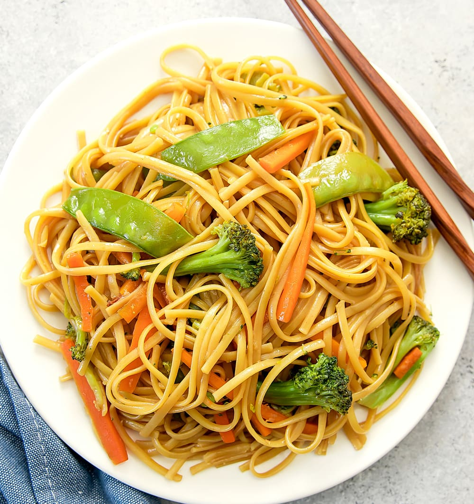

Lo Mein

Description
Lo Mein is made using egg noodles, chicken, vegetables, and sauce. My favorite type of meat to use is chicken thighs, as the dark meat adds a lot of flavor to the dish. Lo Mein is my favorite meal that Sammie and I make.
Ingredients
- 8 ounces lo mein egg noodles
- 1 tbsp olive oil
- 2 cloves garlic, minced
- 2 cups cremini muschrooms, sliced
- 1 red bell peppeter, julienned
- 1 carrot, julienned
- 1/2 cup snow peas
- 3 cups baby spinach
- 2 tbsp sauce
Steps
- Cook meat.
- Stir in veggies.
- Add egg noodles.
- Add sauce and stir.
- Enjoy!